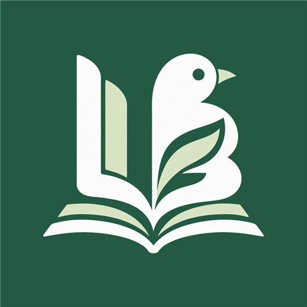
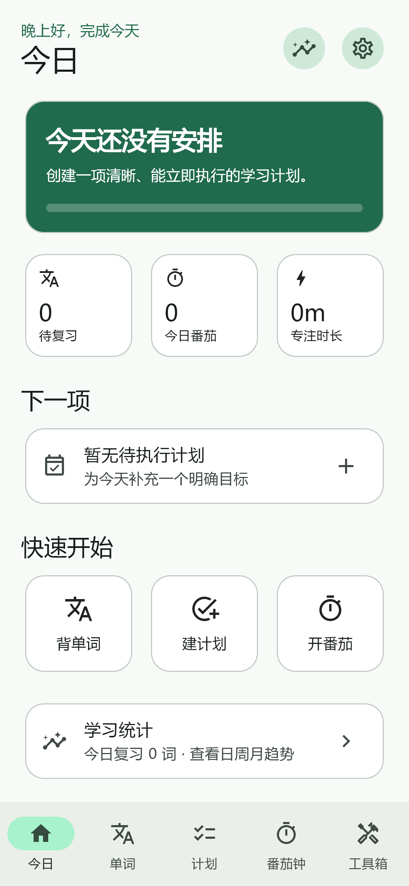
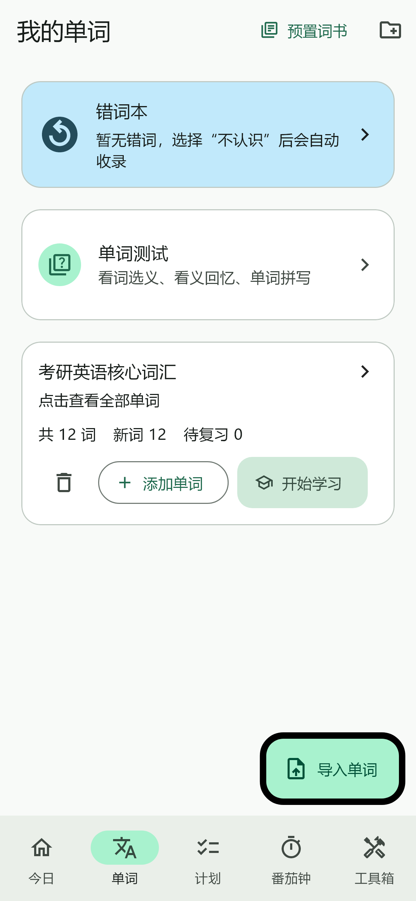
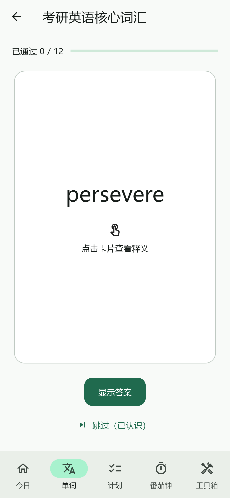
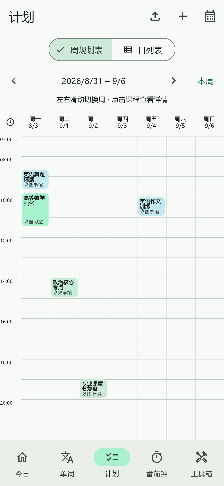
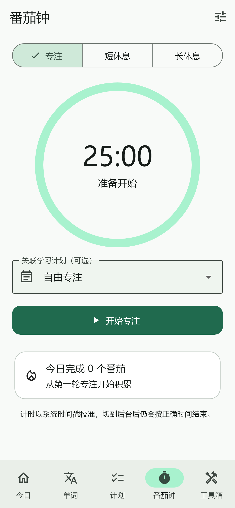

LEARNING BIRD一款为考研与长期学习打造的离线学习管理工具。计划、背词、专注和资料集中在一个应用里，让目标真正落到今天。

Learning Bird 不只记录任务，更把“安排—执行—复习—回顾”连接起来。你能看清这一周，也能专注于眼前的一个单词、一个番茄。
以下均为当前候选测试版本的真实界面，内容使用匿名示例数据。




“不是把计划写得更满，
而是让每一次学习都有去处。”
你的计划，你的节奏，你看得见的每一步。
1.0 候选测试版 · 欢迎参与内测当前测试版本支持 Android 8.0 及以上。测试前建议做好重要学习数据备份。